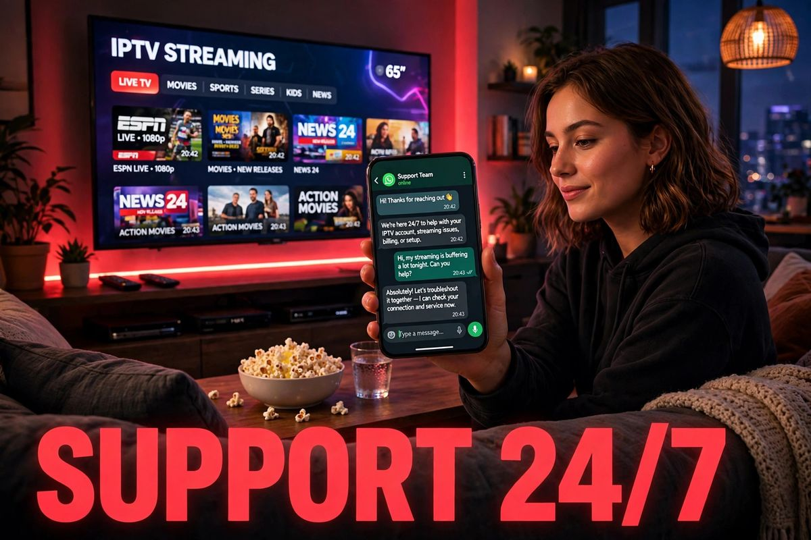
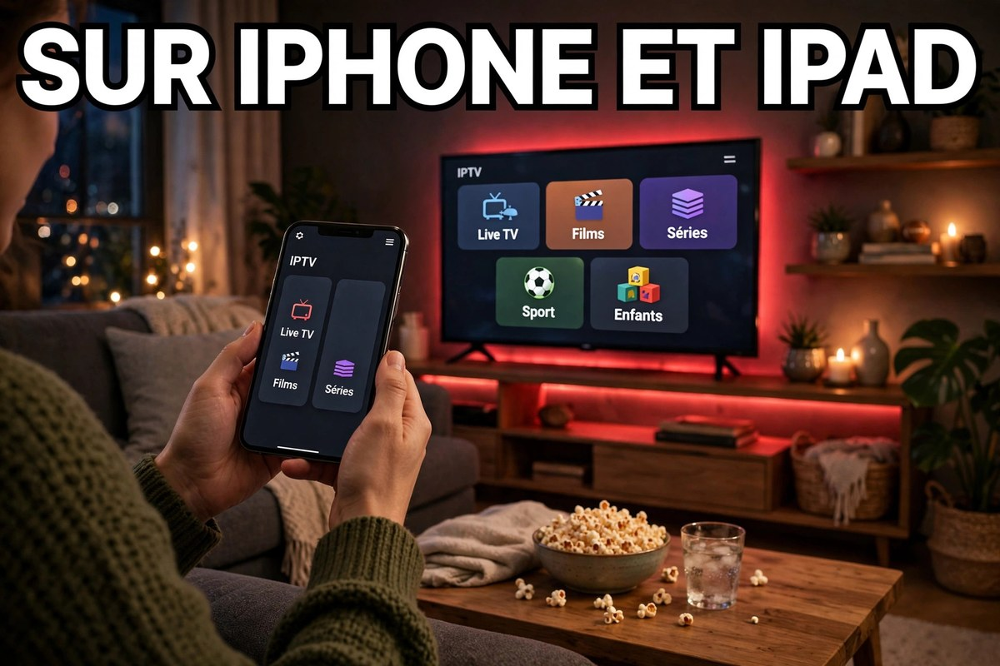
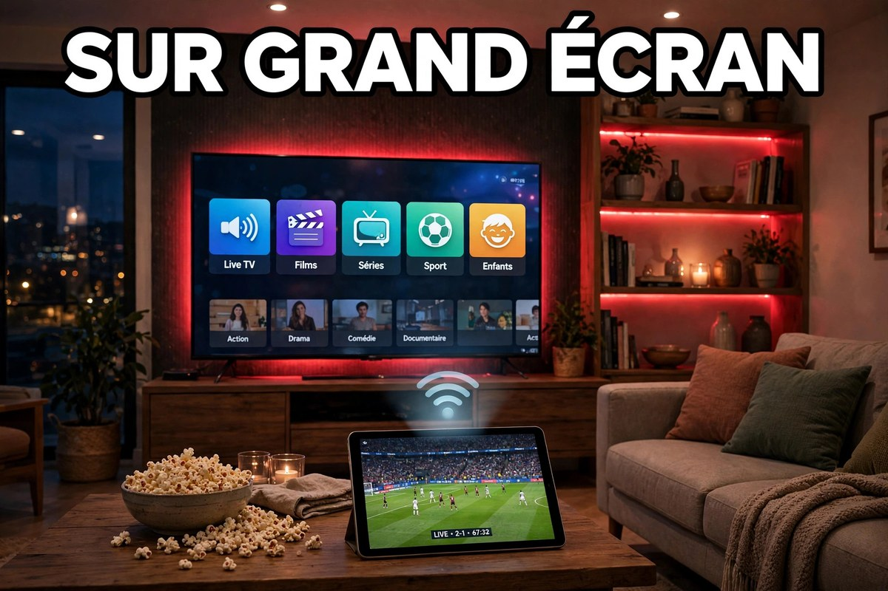

Installation iOS
Installer l’IPTV sur iPhone, iPad et Apple TV
Installer l’IPTV sur iPhone, iPad et Apple TV : applications de l’App Store, configuration de votre abonnement et diffusion sur la télé avec AirPlay.

L’IPTV sur iPhone, iPad et Apple TV
Dernière vérification : 20 novembre 2026.
Les appareils Apple sont parfaits pour profiter de l’IPTV : écrans de grande qualité, processeurs puissants et applications soignées. Votre iPhone devient une télé de poche, votre iPad un écran confortable pour les séries au lit, et l’Apple TV transforme le téléviseur du salon en centre multimédia fluide et silencieux. Avec un seul abonnement Sunday IPTV, vous passez de l’un à l’autre en quelques secondes.
L’écosystème Apple fonctionne toutefois différemment d’Android : toutes les applications viennent de l’App Store, et il n’est pas possible d’installer un lecteur depuis un autre site. Ce guide vous aide à choisir une application fiable, à la configurer sur iPhone, iPad et Apple TV, puis à diffuser vos chaînes sur votre téléviseur avec AirPlay.
La bonne nouvelle, c’est que cette rigueur a aussi des avantages. Les applications de l’App Store sont vérifiées par Apple, se mettent à jour automatiquement et fonctionnent de façon très stable sur des appareils parfois âgés de plusieurs années. Un iPad de cinq ans fait encore un excellent écran IPTV, et une Apple TV HD reste parfaitement capable d’afficher la Full HD sans saccade. Enfin, l’intégration entre vos appareils est un vrai plus : vous pouvez saisir vos identifiants sur l’Apple TV avec le clavier de votre iPhone, envoyer une vidéo du téléphone vers la télé avec AirPlay, ou gérer le temps d’écran des enfants depuis votre propre téléphone. Il suffit de bien choisir l’application et de suivre les étapes ci-dessous, dans l’ordre, pour profiter de tout cela en moins d’un quart d’heure.
Envie de tester ? Essai gratuit de 24 h, activation rapide et aide à l’installation sur WhatsApp.
Demander mon essai gratuitCe qu’il vous faut avant de commencer
- un iPhone, un iPad ou une Apple TV HD ou 4K, avec la dernière mise à jour installée (Réglages, puis Général, puis Mise à jour logicielle) ;
- un identifiant Apple connecté à l’App Store ;
- une connexion internet : 10 Mb/s pour la HD et 25 Mb/s pour la 4K ;
- vos identifiants Sunday IPTV : adresse du serveur, nom d’utilisateur et mot de passe (Xtream Codes), ou lien de playlist M3U ;
- pour l’Apple TV, idéalement un câble Ethernet branché sur la box internet.
Quelles applications IPTV sur l’App Store ?
L’App Store propose plusieurs lecteurs IPTV de qualité. Ils ne fournissent aucun contenu eux-mêmes : ils lisent l’abonnement que vous leur indiquez. Parmi les plus utilisés :
- IPTV Smarters Player Lite : simple et clair, compatible Xtream Codes et M3U, disponible sur iPhone et iPad. Un excellent point de départ.
- GSE Smart IPTV : très complet, avec gestion des playlists, du guide des programmes et de nombreux formats.
- iPlayTV : apprécié sur Apple TV pour son interface proche d’une box opérateur et son guide des programmes. Application payante.
- VLC : gratuit, capable d’ouvrir un lien M3U pour un test rapide, mais sans guide des programmes ni catalogue organisé.
Le catalogue de l’App Store évolue : certaines applications changent de nom, deviennent payantes ou disparaissent. Avant de payer, lisez les avis récents, vérifiez que l’application accepte Xtream Codes ou M3U, et profitez de la période d’essai si elle existe. Les achats intégrés de ces applications rémunèrent leur éditeur : ils ne font pas partie de votre abonnement Sunday IPTV.
Installer et configurer sur iPhone ou iPad

Étape 1 : installer l’application
- Ouvrez l’App Store et touchez Rechercher.
- Tapez le nom de l’application choisie, par exemple IPTV Smarters Player Lite.
- Vérifiez l’éditeur et les avis, puis touchez Obtenir et confirmez avec Face ID, Touch ID ou votre mot de passe.
Étape 2 : ajouter votre abonnement
- Ouvrez l’application et acceptez les conditions d’utilisation.
- Choisissez la connexion Xtream Codes (parfois appelée « Login with Xtream Codes API »).
- Renseignez un nom pour votre profil, votre nom d’utilisateur, votre mot de passe et l’URL du serveur.
- Validez : l’application charge les chaînes en direct, les films, les séries et le guide des programmes.
Sur iPhone, le plus simple est de copier-coller vos identifiants depuis WhatsApp : appuyez longuement sur le message que nous vous avons envoyé, copiez le texte, puis collez chaque information dans le bon champ. Vous évitez ainsi les erreurs de frappe, première cause des échecs de connexion.
Étape 3 : personnaliser l’affichage
Dans les réglages de l’application, masquez les groupes de chaînes inutiles, créez vos favoris et choisissez la qualité par défaut. Sur iPad, profitez du mode paysage et, si l’application le propose, du Picture in Picture : la vidéo continue dans une petite fenêtre pendant que vous utilisez une autre application.
Installer et configurer sur Apple TV
L’Apple TV est sans doute le meilleur appareil Apple pour l’IPTV : interface fluide, télécommande précise, et une image 4K HDR sur l’Apple TV 4K.
- Sur l’écran d’accueil de l’Apple TV, ouvrez l’App Store.
- Allez dans Rechercher et tapez le nom de l’application, par exemple iPlayTV ou un autre lecteur compatible tvOS.
- Sélectionnez Obtenir ou le prix, puis confirmez.
- Ouvrez l’application et ajoutez votre abonnement en Xtream Codes ou en M3U.
Taper une longue adresse avec la télécommande de l’Apple TV est fastidieux. Deux astuces : utilisez le clavier de votre iPhone, qui s’affiche automatiquement en notification lorsqu’un champ de saisie est ouvert sur l’Apple TV ; ou, si l’application le propose, configurez la playlist depuis votre iPhone ou depuis son site web, puis synchronisez-la.
Réglages conseillés sur Apple TV
- Dans Réglages, puis Vidéo et audio, activez Ajuster la plage dynamique et Ajuster la fréquence d’images : l’Apple TV adapte alors l’affichage à chaque chaîne, pour une image plus naturelle et sans saccades.
- Branchez l’Apple TV en Ethernet si possible : le direct est beaucoup plus stable qu’en Wi-Fi.
- Laissez les mises à jour automatiques des applications activées pour profiter des corrections de lecture.
Envie de tester ? Essai gratuit de 24 h, activation rapide et aide à l’installation sur WhatsApp.
Demander mon essai gratuitDiffuser sur votre téléviseur avec AirPlay

Vous n’avez pas d’Apple TV ? Si votre téléviseur est compatible AirPlay (c’est le cas de nombreux modèles Samsung, LG, Sony et Philips récents), vous pouvez y envoyer la vidéo depuis votre iPhone ou votre iPad.
- Connectez votre iPhone et votre téléviseur au même réseau Wi-Fi.
- Lancez une chaîne ou un film dans votre application IPTV.
- Touchez l’icône AirPlay dans le lecteur (un rectangle avec un triangle) ou ouvrez le Centre de contrôle et choisissez Recopie de l’écran.
- Sélectionnez votre téléviseur : la vidéo s’affiche sur le grand écran.
AirPlay est pratique pour un film ou un match ponctuel. Pour un usage quotidien, une application installée sur la télé ou sur une Apple TV offre une meilleure stabilité et libère votre téléphone.
Utiliser un lien M3U
Si vous préférez le lien M3U, choisissez dans l’application l’option Ajouter une playlist M3U ou Load your playlist or file/URL, puis collez le lien que nous vous avons envoyé. Pour un test rapide, vous pouvez aussi ouvrir ce lien dans VLC : touchez l’onglet Réseau, puis Flux réseau, collez l’adresse et lancez la lecture.
Économiser la batterie et les données
Le streaming vidéo sollicite la batterie et le forfait mobile. Quelques réflexes simples :
- regardez de préférence en Wi-Fi : une heure en HD représente environ 1 à 3 Go de données ;
- choisissez la qualité SD ou HD lorsque vous êtes en 4G ou 5G ;
- baissez la luminosité et activez le mode économie d’énergie sur iPhone pour les longues sessions ;
- surveillez votre consommation dans Réglages, puis Données cellulaires, où vous pouvez aussi interdire les données mobiles à l’application IPTV.
iPhone, iPad ou Apple TV : quel appareil pour quel usage ?
Chaque appareil Apple a ses points forts, et beaucoup de foyers combinent les trois.
- L’iPhone est idéal pour suivre un match en déplacement, regarder les informations dans les transports ou garder un œil sur une chaîne pendant que la télé du salon est occupée. Son écran est petit, mais la qualité d’image est excellente.
- L’iPad offre le meilleur compromis entre confort et mobilité : parfait pour les séries au lit, les dessins animés en voiture ou une deuxième télé dans la cuisine. Le mode Picture in Picture permet de suivre un match tout en consultant autre chose.
- L’Apple TV est la solution du salon : télécommande, grand écran, 4K HDR et son multicanal. C’est l’appareil qui ressemble le plus à une box opérateur, en beaucoup plus fluide.
Installez la même application sur vos différents appareils : vous retrouverez la même interface partout. Gardez simplement en tête qu’un abonnement standard permet une connexion à la fois.
Bien utiliser votre application au quotidien
Organiser vos chaînes
Les listes IPTV regroupent des milliers de chaînes du monde entier. Prenez quelques minutes pour masquer les groupes qui ne vous concernent pas et pour créer une liste de favoris avec les chaînes que vous regardez vraiment. Dans la plupart des applications, un appui long sur une chaîne permet de l’ajouter aux favoris. La navigation devient alors bien plus rapide.
Profiter du replay et de la recherche
Sur les chaînes compatibles, ouvrez le guide des programmes et revenez en arrière pour lancer une émission déjà diffusée. Pour les films et séries, la fonction de recherche est plus efficace que la navigation par catégories : quelques lettres du titre suffisent.
Piloter l’Apple TV avec la télécommande Siri
Sur Apple TV, le pavé tactile ou le pavé directionnel de la télécommande permet de faire défiler rapidement les listes. Le bouton TV ou Accueil ramène à l’écran d’accueil, et un double appui affiche les applications ouvertes. Vous pouvez aussi utiliser l’application Télécommande du Centre de contrôle de votre iPhone, pratique pour saisir du texte.
Mettre en place un contrôle parental
Si vos enfants utilisent l’iPad ou l’Apple TV, activez Temps d’écran dans les Réglages : vous pouvez limiter la durée d’utilisation des applications et restreindre les contenus. Complétez avec le code parental proposé par la plupart des lecteurs IPTV, qui verrouille les groupes de chaînes ou les catégories de films de votre choix. Sur Apple TV, les restrictions se trouvent dans Réglages, puis Général, puis Restrictions.
Problèmes fréquents et solutions
« Connexion impossible » ou « Identifiants invalides »
Vérifiez l’adresse du serveur, avec http:// ou https:// et le numéro de port éventuel, puis votre nom d’utilisateur et votre mot de passe, en respectant les majuscules. Le copier-coller depuis WhatsApp évite la plupart des erreurs.
La vidéo se lance mais s’arrête après quelques secondes
Changez de lecteur dans les réglages de l’application si plusieurs sont proposés, vérifiez votre débit et rapprochez-vous de la box internet. Sur Apple TV, passez en Ethernet.
Le son fonctionne mais l’image reste noire
Certains formats vidéo sont mieux pris en charge par un lecteur que par un autre. Essayez un autre lecteur dans les réglages, ou testez la même chaîne dans une autre application pour identifier l’origine du problème.
AirPlay ne trouve pas le téléviseur
Vérifiez que l’iPhone et la télé sont sur le même réseau Wi-Fi, que la fonction AirPlay est activée dans les réglages du téléviseur, puis redémarrez les deux appareils.
Pour les autres cas, consultez notre guide panne IPTV ou contactez le support Sunday IPTV sur WhatsApp, 24 heures sur 24.
Envie de tester ? Essai gratuit de 24 h, activation rapide et aide à l’installation sur WhatsApp.
Demander mon essai gratuitQuestions fréquentes
Peut-on installer TiviMate ou IPTV Smarters Pro sur iPhone ?
TiviMate n’existe pas sur iOS. La gamme Smarters est présente sur l’App Store sous le nom IPTV Smarters Player Lite. D’autres lecteurs comme GSE Smart IPTV ou iPlayTV offrent des fonctions équivalentes.
Faut-il une Apple TV pour regarder l’IPTV sur la télé ?
Non. Vous pouvez utiliser AirPlay si votre téléviseur est compatible, ou une application installée directement sur la télé. L’Apple TV reste la solution la plus confortable pour un usage quotidien.
Les applications IPTV de l’App Store sont-elles payantes ?
Certaines sont gratuites avec publicité, d’autres proposent un achat unique ou un abonnement pour débloquer toutes les fonctions. Ce paiement revient à l’éditeur de l’application, pas à Sunday IPTV.
Puis-je regarder sur mon iPhone et sur l’Apple TV avec le même abonnement ?
Oui. Installez l’application sur les deux appareils et utilisez-les à tour de rôle. Pour regarder sur deux écrans en même temps, demandez-nous une offre multi-connexions.
L’IPTV fonctionne-t-elle en voyage avec un iPhone ?
Oui, partout où vous avez une connexion internet stable. Pensez simplement à votre forfait de données si vous n’êtes pas en Wi-Fi.
Testez Sunday IPTV gratuitement
Essai gratuit de 24 heures, activation rapide et support 24/7 sur WhatsApp.
Demander mon essaiÀ lire aussi

IPTV Smarters Pro : installer et configurer
IPTV Smarters Pro : installation sur Android, Fire TV, iPhone et Windows, connexion Xtream Codes, réglages recommandés et solutions aux erreurs fréquentes.

Les meilleures applications IPTV en 2026
Les meilleures applications IPTV en 2026 : TiviMate, IPTV Smarters Pro et les lecteurs pour Smart TV et Apple, comparés selon votre appareil et votre usage.

Essai IPTV gratuit sans risque
Essai IPTV gratuit de 24 heures : comment le demander, préparer votre appareil, ce qu’il faut vérifier pendant le test et comment choisir ensuite votre formule.